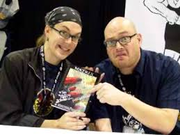

Spagoot.com was open back in 2017 by the Spagoot Brothers, Edward and Joe Spagoot. They were both gamers and that love for gaming from a young age led to them opening their gaming accesory store. Edward and Joe have different skill that they bring the table. Ed has a Bachelor's degree in Sales and Marketing so he takes care of the numbers and advertisements for the store. Joe aslo has a Bachelor's degree in Management and also has manager experience in retail because he had worked for Bestbuy as there an Assitant Manager for 5 years Before his brother approached him with this idea back in 2009. They had a store before Spagoot called Game Spot which lasted only a year before they shutdown to not being able to keep up with there competitors and people thinking that someone had spelled Game Stop wrong on the flyer. 
In 2017, they decided to have another go at this and open Spagooot. When it comes this business, they have had gone through multiple names for their store before finally staying with the name Spagoot. They felt names that would stick out from the rest of the gaming stores that are out there already. They didn't want to have what happened last time happen again so they needed something that was unique and also something people would remeber. They are doing well recently compared to other year due to the fact that they have started doing more business with other vendors who are part of well known compnaies in the gaming accesory world. They only have one store at this point, but in time but they are planning on opening a second location in Summer of 2019 further out East on Long Island and their long term goal is to open location all over the USA.